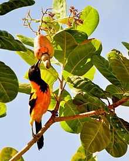
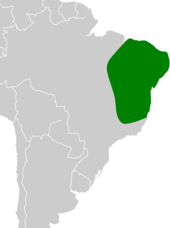

Nomes Populares: sofreu (Ceará), concriz (Pernambuco e Rio Grande do Norte), e sofrê no sertão nordestino.
Atualmente a espécie não corre risco de extinção.
Classificação Biológica
Dominio: Eukaryota
Reino: Animalia
Filo: Chordata
Classe Aves
Ordem: Passeriformes
Família: Icteriade
Espécie: I. jamacaii
Nutrição Geral e Hábitos Alimentares
Tipo de Nutrição: Heterotrófico
Insetos e Aranhas: O corrupião se alimenta de uma variedade de insetos e aranhas, o que fornece uma fonte importante de proteínas.
Frutas e Sementes: Diversas frutas e sementes fazem parte da dieta do corrupião, incluindo cocos maduros de buriti.
Legumes e verduras: O corrupião também consome legumes e verduras.
Néctar de Flores: O corrupião é conhecido por consumir o néctar de várias flores, incluindo o ipê-amarelo e o mulungu. Curiosamente, acredita-se que o consumo dessas flores influencia a coloração da plumagem do corrupião.
Lagartos e ovos de outros pássaros: Em algumas ocasiões, o corrupião pode se alimentar de lagartos e ovos de outras espécies de pássaros.

Corrupião se Alimentando.
Morfologia Básica e Coloração
Tamanho: Mede entre 23 e 26 centímetros de comprimento.
Peso: O macho tem peso médio de 67,3 gramas e a fêmea de 58,5 gramas.
Coloração
Coloração geral alaranjada e preta. Apresenta capuz preto, dorso e asas pretas. As asas apresentam visível mancha branca nas rêmiges secundárias.
Comportamento
O corrupião vive em pares, não costuma acompanhar bandos mistos de aves. Podem se postar de modo estranho quando cantam, ficando de cabeça para baixo, esticando o pescoço para cima ou eriçando as penas.
Pode ser agressivo com possíveis predadores e territorialista.
Distribuição no Território Nacional
Endêmico do Brasil, o corrupião ocorre nos estados do Nordeste, Centro-Oeste e Sudeste do País, além do leste do Pará, Goiás e Tocantins. Comum em áreas de Caatinga e zonas secas abertas, também habita bordas de florestas e clareiras, onde vive aos pares.
Mapa de Ocorrência

Reprodução
Reproduz entre a primavera e verão, atinge a maturidade sexual de 18 a 24 meses. Pode construir seu próprio ninho, mas costuma ocupar ninhos de outras espécies para procriar (ex.: bem-te-vi e joão-de-barro), cada ninhada geralmente tem entre 2 e 3 ovos, e 14 dias de incubação.